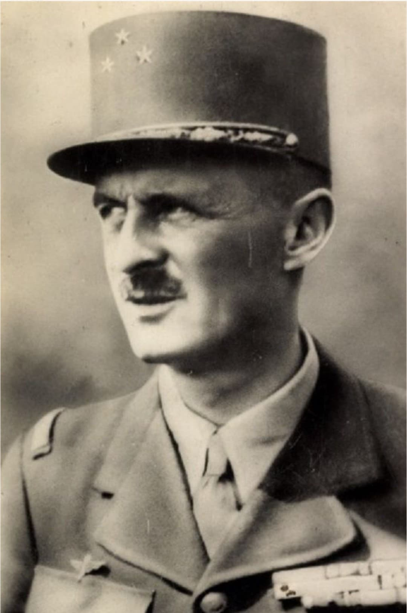

Nom : Philippe François Marie Leclerc de Hauteclocque
Naissance : 22 novembre 1902
Décès : 28 novembre 1947
Nationalité : Française
Rôle : Général de la France Libre, commandant de la 2ᵉ DB
Philippe Leclerc est l’une des figures militaires les plus emblématiques de la France Libre. Chef de la 2ᵉ Division Blindée, il participe à la libération de Paris en août 1944 et poursuit la lutte jusqu’en Allemagne. Son nom reste associé à la ténacité, au courage et à l’esprit de libération.
Dès 1940, Leclerc rejoint la France Libre et mène des opérations en Afrique, notamment la prise de Koufra en 1941, où il prononce le célèbre serment : « Ne déposer les armes que lorsque nos couleurs flotteront sur la cathédrale de Strasbourg. »
Il devient ensuite l’un des principaux chefs militaires de De Gaulle.
À la tête de la 2ᵉ DB, Leclerc débarque en Normandie en 1944, avance rapidement vers Paris et entre dans la capitale le 24 août 1944. Sa division joue un rôle décisif dans la libération de la ville.
Leclerc est l’un des principaux acteurs de la libération de Paris. Sa division, soutenue par les FFI, force les troupes allemandes à capituler. Le 25 août 1944, il reçoit la reddition du général von Choltitz.
Après la guerre, Leclerc commande les forces françaises en Indochine. Il meurt en 1947 dans un accident d’avion. Son nom reste associé à la libération de la France et à l’esprit de la France Libre.